Changelog for QGIS 2.12¶

This is the change log for the next release of QGIS - version 2.12.0 ‘Lyon’ - host city to our developer meet up in April 2012.
New Features in QGIS 2.12 ‘Lyon’
This is the next release in our 4-monthly release series. It gives you access to the new features we have been working on and represents the ‘cutting edge’ of QGIS development.
QGIS ‘Lyon’ is jam-packed with awesome new features. Special highlights are support for rule based labelling, rule based styling of attribute tables, and advanced geometry checker, support for digitising curve based geometries, better authentication management and much, much more! QGIS 2.12 also has many bug fixes and memory leaks addressed. The features provided in QGIS 2.12 will be included in the next LTR release (slated for release in 2016), so using this release provides you with an excellent opportunity to test new features that will make their way into the next LTR.
Whenever new features are added to software they introduce the possibility of new bugs - if you encounter any problems with this release, please file a ticket on the QGIS Bug Tracker. If you are working in a production environment where you wish to be more conservative about rolling out new features to your users, we also provide a Long Term Release (LTR) version of QGIS. The current LTR is version 2.8.3 and is available at download.qgis.org.
Thanks
We would like to thank the developers, documenters, testers and all the many folks out there who volunteer their time and effort (or fund people to do so).
From the QGIS community we hope you enjoy this release! If you wish to donate time, money or otherwise get involved in making QGIS more awesome, please wander along to qgis.org and lend a hand!
Finally we would like to thank our official sponsors for the invaluable financial support they provide to this project:
GOLD Sponsor: Asia Air Survey, Japan
SILVER Sponsor: AGH University of Science and Technology, Krakow, Poland
SILVER Sponsor: State of Vorarlberg, Austria
SILVER Sponsor: Office of Public Works, Ireland, Ireland
SILVER Sponsor: Sourcepole AG, Switzerland
BRONZE Sponsor: Lutra Consulting, UK
BRONZE Sponsor: WhereGroup GmbH & Co. KG, Germany
BRONZE Sponsor: Nicholas Pearson Associates, UK
BRONZE Sponsor: QGIS Poland, Poland
BRONZE Sponsor: www.terrelogiche.com, Italy
BRONZE Sponsor: GeoSynergy, Australia
BRONZE Sponsor: Gaia3D, South Korea
BRONZE Sponsor: Royal Borough of Windsor and Maidenhead, UK
BRONZE Sponsor: Chartwell Consultants Ltd, Canada
BRONZE Sponsor: Trage Wegen vzw, Belgium
BRONZE Sponsor: GFI - Gesellschaft fr Informations technologie mbH, Germany
BRONZE Sponsor: GKG Kassel,(Dr.-Ing. Claas Leiner), Germany
BRONZE Sponsor: GIS-Support, Poland
BRONZE Sponsor: ADLARES GmbH, Germany
BRONZE Sponsor: www.molitec.it, Italy
BRONZE Sponsor: www.argusoft.de, Germany
BRONZE Sponsor: Customer Analytics, USA
BRONZE Sponsor: Avioportolano Italia, Italy
BRONZE Sponsor: Faculty of Geology, Geophysics and Environmental Protection, AGH, University of Science and Technology, Poland
BRONZE Sponsor: Urbsol, Australia
BRONZE Sponsor: MappingGIS, Spain
BRONZE Sponsor: GIS3W, italy
A current list of donors who have made financial contributions large and small to the project can be seen on our donors list. If you would like to become and official project sponsor, please visit our sponsorship page for details. Sponsoring QGIS helps us to fund our six monthly developer meetings, maintain project infrastructure and fund bug fixing efforts.
QGIS is Free software and you are under no obligation to pay anything to use it - in fact we want to encourage people far and wide to use it regardless of what your financial or social status is - we believe empowering people with spatial decision making tools will result in a better society for all of humanity.
General¶
Feature: New welcome screen¶
Instead of simply showing a blank, white canvas, QGIS will now show you a list of your most recent projects, along with thumbnails to make it quick and easy to dive back into the work you left off in your last session.
This feature was developed by: Matthias Kuhn at OPENGIS.ch
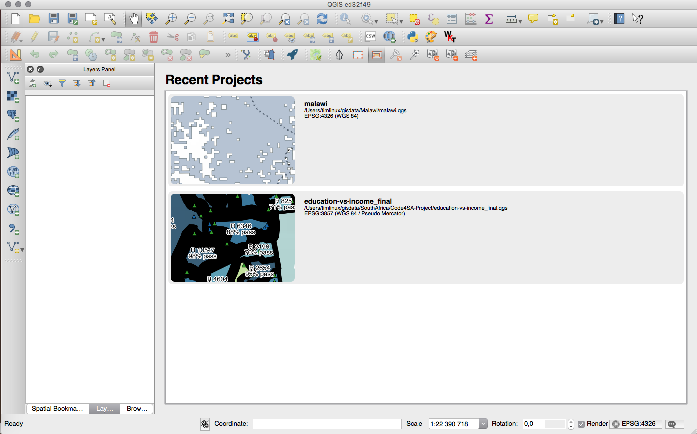
Feature: Ongoing improvements to code quality¶
Through the use of the address sanitizer library, hundreds of memory leaks have been identified and fixed. Automated code scans using Coverity Scan have been regularly used to identify potential issues, and our Coverity defect density is now impressively low at just 0.02 defects per 1000 lines of code. The library of automated unit tests has also grown significantly during 2.12, resulting in more regressions being identified and fixed immediately. In 2.12 we also added continuous testing on OSX, so that every commit is tested against the unit test suite on both Linux and OSX platforms.

Feature: Advanced settings editor¶
A new panel has been added to the settings dialog that lets you edit any of the options already defined in your your profile. This is intended for power users only as you could experience unexpected behaviour in QGIS if you change these settings without fully understanding what you are doing.
This feature was developed by: Matthias Kuhn at OpenGIS
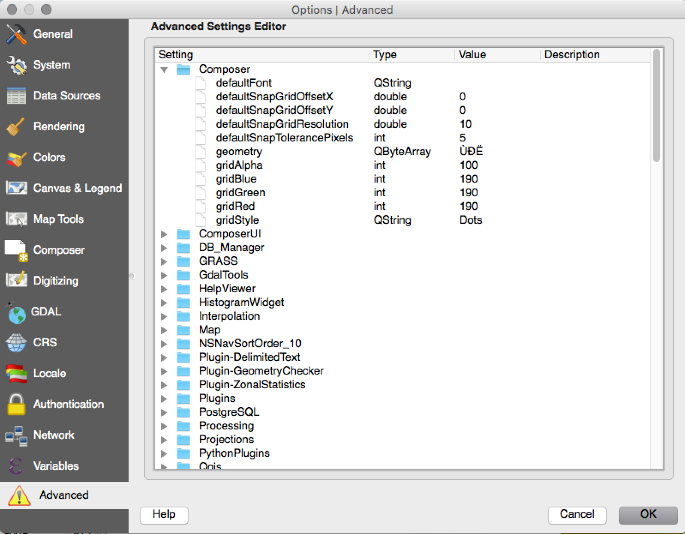
Feature: Mutually exclusive layer tree groups¶
With this feature, you can create layer groups where only one layer in the group may be visible at any time. The feature can be toggled individually for groups in layer tree view context menu.
This feature was developed by: Martin Dobias at Lutra Consulting on subcontract to Gis3W
This feature was funded by: Tuscany Region (Italy) - SITA (CIG: 63526840AE)

Feature: Filtering for field values in expression widget¶
When creating an expression that uses values from a field, you can now filter the field values preview panel.
This feature was developed by: Salvatore Larosa

Feature: User Interface Theme support¶
QGIS 2.12 now supports user interface theming support which you can use to customise the appearance of window backgrounds, buttons etc. By default we ship with two themes: Default and Night mapping. The latter is a dark theme which some people may prefer if they find that light themes cause eye strain. If you know a little CSS you can create your own custom themes fairly easily too…
Find out more about theming support by reading Nathan Woodrow’s blog article.
This feature was developed by: Nathan Woodrow

Feature: New expression functions in 2.12¶
A set of functions for “fuzzy matching” have been added. These include functions for finding the similarity of two strings and also for performing phonetic matching between strings, and allow you to perform filters for records which “nearly match” a specified string.
More geometry based functions have been added, including:
num_points(geom)for calculating the number of nodes in a geometryarea(geom),length(geom)andperimeter(geom), for calculating the area, length and perimeter of any geometry object. Previously only calculation of the area, length and perimeter of the current feature’s geometry was possible.start_point(geom),end_point(geom),point_n(geom, n), for retrieving the first, last and numbered points from a geometrymake_point(x,y), for manual creation of a point geometryx(geom),y(geom)functions which return the x and y coordinate for point geometries or the centroid x/y for non-point geometries
A new project_color function has been added, which allows you to
retrieve a color from the project’s color scheme by name. This lets you
create ‘linked colors’, where the color of symbol or labeling components
can be bound to a color in the project’s color scheme. Update the color
in the scheme, and all the linked colors will be automatically refreshed
to match!
Additionally, some very useful expressions have been ported from the expressions+ plugin, including:
color_part: allows retreival of a specific color component (eg red, hue, alpha) from a colorset_color_part: allows a specific color component to be overridden, eg alter the alpha value (opacity) of a colorday_of_week: returns the day of week as a number from a date
Additionally, the context help for expression functions has been improved for better readability.
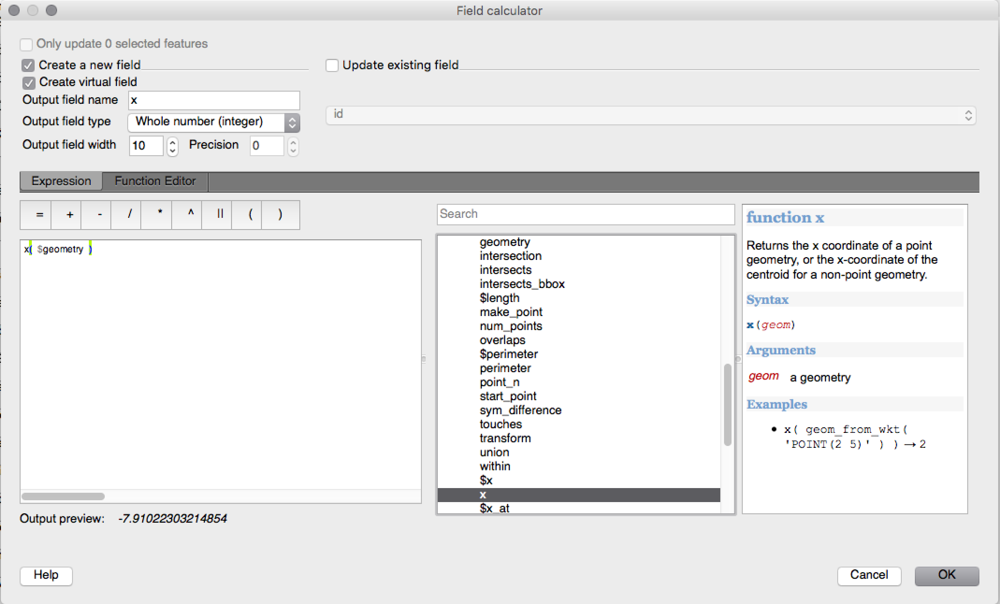
Feature: Variables in expressions¶
You can now define custom variables for use in expressions. Variables can be defined at the application global level, project level, layer level and composition level. Just like CSS cascading rules, variables can be overwritten - eg, a project level variable will overwrite any application level variables set. You can use these variables to build text strings or other custom expressions. For example in composer creating a label with this content:
This map was made using QGIS [% @qgis_version %].
The project file for this map is: [% @project_path %]
Will render the label like this:
This map was made using QGIS 2.12.
The project file for this map is: /gis/qgis-user-conference-2015.qgs
You can manage global variables from the Settings -> Options menu,
and project level variables from Project properties (including
adding your own custom variables).
This feature was developed by: Nyall Dawson

Analysis tools¶
Feature: Added number of vertices to derived fields in identify tool¶
Using the identify tool on a line feature will now show the number of vertices in the feature as an additional derived attribute.
Feature: Raster alignment tool¶
This new tool in qgis_analysis library is able to take several rasters as input and:
reproject to the same CRS
resample to the same cell size and offset in the grid
clip to a region of interest
rescale values when required
This feature was developed by: Martin Dobias at Lutra Consulting on subcontract to Kartoza
This feature was funded by: DFAT for the InaSAFE project

Feature: Geometry Checker and Geometry Snapper plugins¶
Two new plugins (which you need to manually enable in the plugin manager) are available for validating and correcting geometries. The Geometry Checker plugin (pictured right) will check and correct your vector dataset for a number of different types of systematic errors and attempt to resolve them for you. After resolving an error, the error list is automatically updated so that if, for example, fixing one error also resolves other errors, all the errors are removed from the issue list.
With the Geometry Snapper tool you can align the edges and vertices of one vector layer to the edges and vertices of a second layer using a user defined tolerance.
This feature was developed by: Sandro Mani at Sourcepole AG
This feature was funded by: Canton of Solothurn
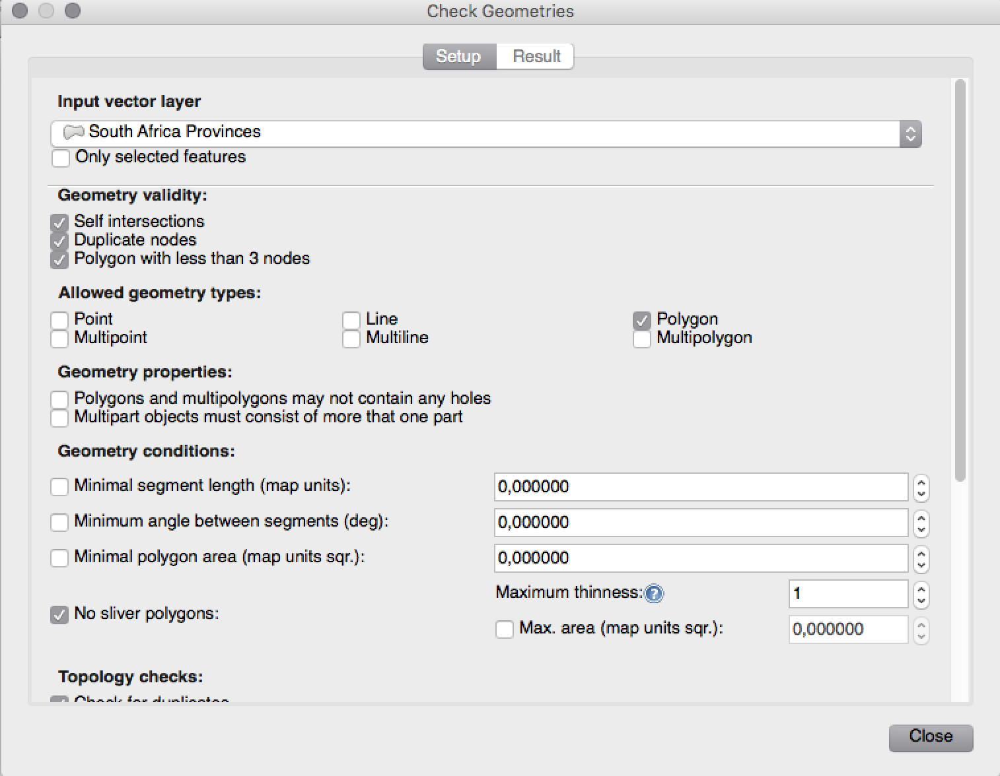
Application and Project Options¶
Feature: Encrypted password management¶
QGIS 2.12 introduces a new authentication system (see PR 2330, QEP 14). Here’s what is included:
Master-password-encrypted authentication configurations stored in an SQLite database
Authentication method plugin architecture (like data providers)
Basic auth method plugin
Basic plugin integrated with PostGIS and OWS provider connections
Inline with current username/password setup (still fully functional)
SSL server connection configurations (save exceptions or custom configs for SSL connection errors)
PKI authentication related:
Import extra Certificate Authorities, intermediate cert issuers and personal identity bundles
Manage certificate components like in Firefox
Authentication method plugins for PEM and PKCS#12 bundles on disk, and for stored personal identities
Integrated with OWS provider connections (PostGIS and other databases will take a bit more work)
For shared project scenarios, including a network drive setup, you can edit the authentication configuration (authcfg) ID to something that is shared across users.
Since the authcfg ID is embedded in the project file, each user just needs to make an auth config that has their specific credentials for that resource, then edit the ID (upon creation of config or after) to the same ID in the project file. Then, when the resource loads, the same configuration will be queried on everyone’s QGIS, just with their respective credentials for the authentication method used.
For the Handle Bad Layers dialog, users can Add/Edit/Remove auth configs within the dialog and have the data source URI updated to match. So, in the scenario of a shared project, the user could immediately add an appropriate new auth config (and see exactly what shared authcfg ID should be used) upon project loading .
Currently, the master password auto-set can be set via Python, or by way
of a custom C++ plugin, on launch setups using a call to
QgsAuthManager::instance()->setMasterPassword( "mypassword", true ),
or by QGIS_AUTH_PASSWORD_FILE environment variable to set the path to
a file with the master password.
Note: for Server, you can also use QGIS_AUTH_DB_DIR_PATH to set the path to a qgis-auth.db directory and QGIS_AUTH_PASSWORD_FILE to set the path to a file with the master password on the server.
PKI example docs: https://github.com/dakcarto/QGIS-Enhancement-Proposals/blob/auth-system/extras/auth-system/pkiuser.rst
This feature was developed by: Larry Shaffer
This feature was funded by: Boundless Spatial, Inc.
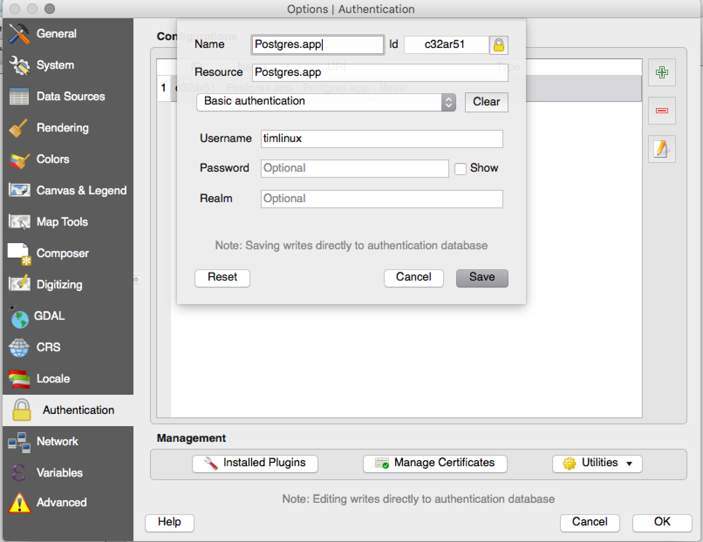
Browser¶
Feature: Improvements to PostGIS connections in browser¶
The QGIS browser now supports additional functionality for PostGIS connections, including the ability to create, rename and delete schemas, support for renaming and truncating layers and to copy tables from one schema to an other.
This feature was developed by: Nyall Dawson
Table copying by: Jürgen Fischer at norBIT GmbH
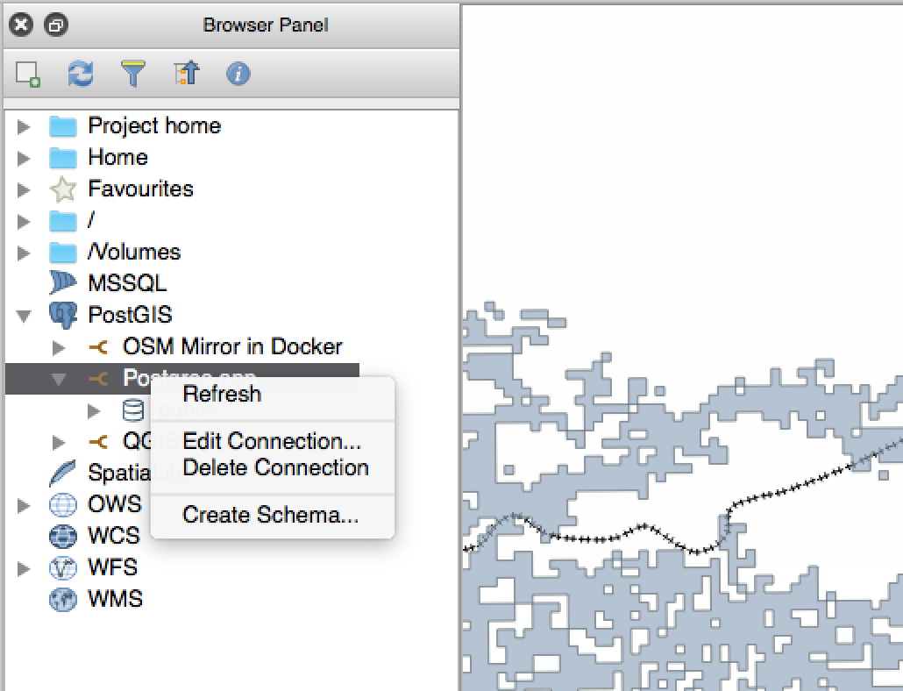
Data Providers¶
Feature: PostGIS provider improvements¶
The following improvements were made to the PostGIS provider:
performance improvements for rule based renderer for PostGIS layers
added support for compound keys on views
Compound keys developed by: Jürgen Fischer at norBIT GmbH
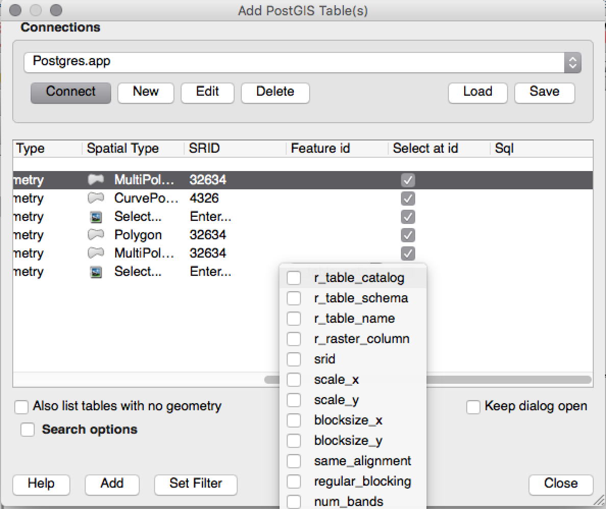
Data management¶
Feature: DBManager Improvements¶
There have been a number of improvements to the DB Manager tool:
In the DB Manager you can now export your data to any OGR supported data format instead of the Shapefile only that was available in the previous version.
Oracle Spatial is now supported in the DBManager
When importing data into a table you can use the new import only selected features option to restrict what will be imported.
New query windows are now created as tabs to reduce the number of dialogs
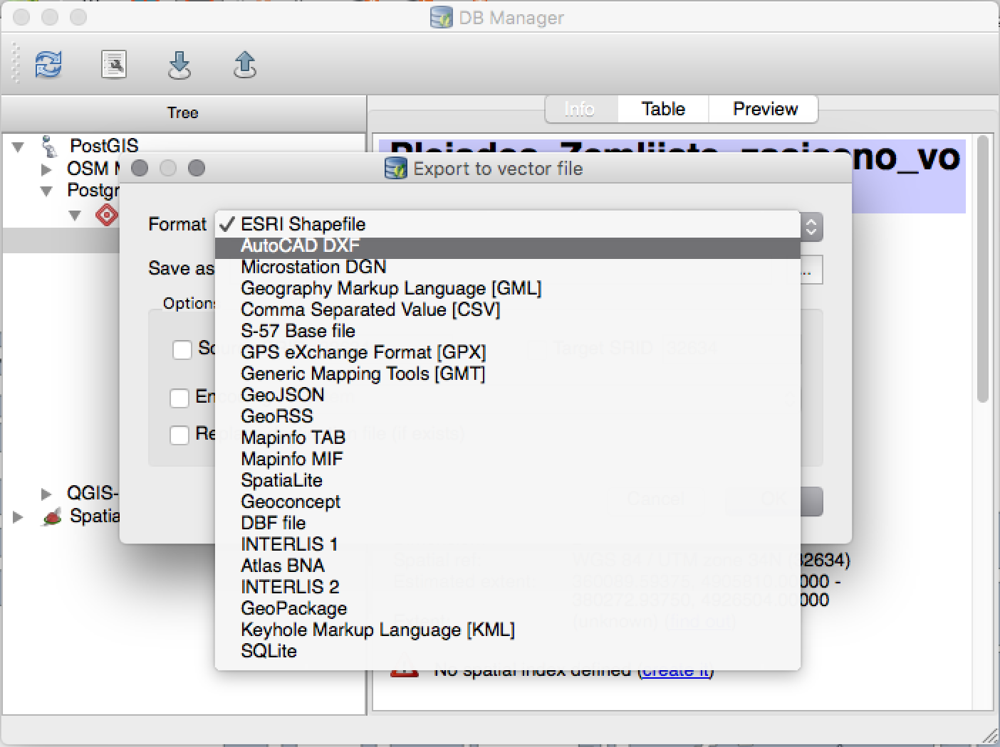
Feature: Conditional formatting for attribute table cells¶
This is a major improvement to QGIS’s attribute table rendering support. You can now style table cells according to rules. For example you can colour all cells with a population of less than 50 000 in red. The option is enabled via a new icon on the table toolbar at the top right of the attribute table window. You can read more about this feature on Nathan Woodrow’s blog article.
This feature was developed by: Nathan Woodrow
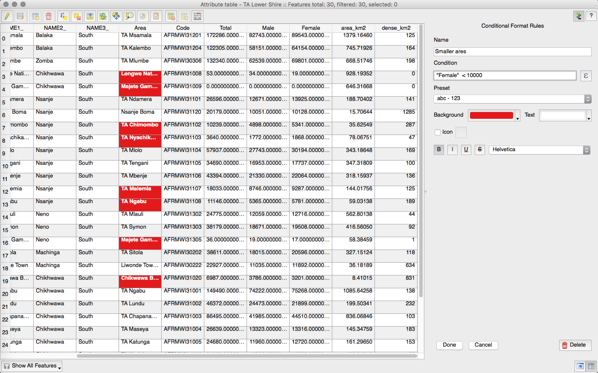
Feature: Support for relative paths in widgets¶
For the following edit widget types:
File Name
Photo
Web View
If the path which is selected with the file browser is located in the same directory as the .qgs project file or below, paths are converted to relative paths. This increases portability of a QGIS project with multimedia information attached.
This feature was developed by: Matthias Kuhn at OpenGIS
This feature was funded by: Alta ehf
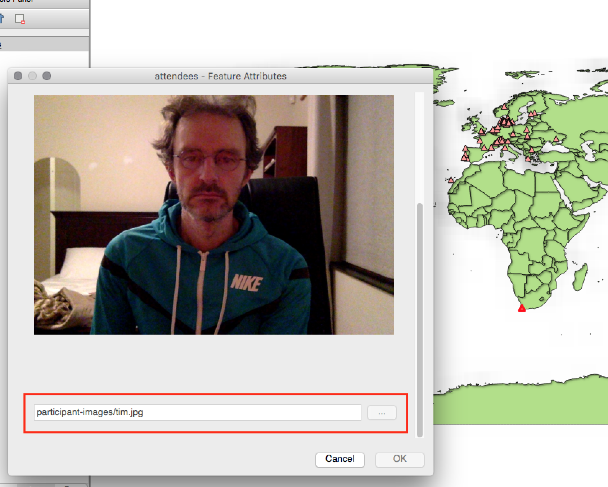
Digitising¶
Feature: Digitising improvements¶
In QGIS 2.10 we mentioned that there is a new geometry architecture for QGIS but that not all features were supported in the digitising tools. With QGIS 2.12 we now have editing support for the creation of curves / ‘circular strings`. Note again that you need to be using a data provider (e.g. PostGIS, GML or WFS) that supports curves. These improvements to the digitising tools were also added in QGIS 2.12:
tool to add circular strings with two points and radius
tool to add circular strings with start point, curve point and end point
allow escape to cancel drawing new features
display a node table when editing using node tool, allowing you to manually enter the exact x and y coordinates for nodes, as well as the z and m values (depending on layer type)
Additionally, more of the geometry editing and modification tools were updated to work correctly with layers containing z or m dimensions.
This feature was developed by: Marco Hugentobler at Sourcepole AG
This feature was funded by: Canton of Solothurn

Labelling¶
Feature: Data defined quadrant when in “around point” mode¶
Its now possible to specify a data defined quadrant when a point label is set to the Around Point placement mode. This allows you to manually override the quadrant placement for a specific label while allowing the remaining labels to fall back to automatic placement.
See this article for more details.
This feature was developed by: Nyall Dawson

Feature: Draw only labels which fit inside polygons¶
An option has been added to polygon layers to only draw labels which fit completely within polygon features.
This feature was developed by: Nyall Dawson

Feature: Control priority of labeling obstacles¶
In 2.12 it’s now possible to specify the priority for labeling obstacles. This allows you to make labels prefer to overlap features from certain layers rather than others. The priority can also be data defined so that certain features are more likely to be covered than others. You can also use data defined expressions or fields to control whether a specific feature in layer will act as an obstacle for labels.
This feature was developed by: Nyall Dawson
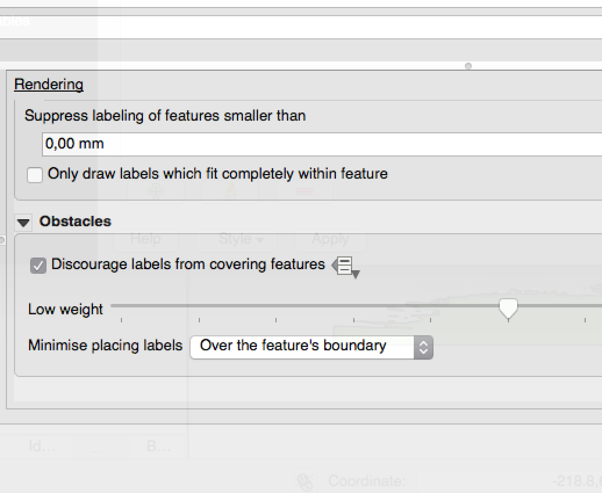
Feature: New options to control how polygon layers act as obstacles¶
New options have been added to control how labels should be placed to avoid overlapping the features in polygon layers. The options are to either avoid placing labels over polygon interiors or avoid placing them over polygon boundaries. Avoiding placing labels over boundaries is useful for regional boundary layers, where the features cover an entire area. In this case it’s impossible to avoid placing labels within these features and it looks much better to avoid placing them over the boundaries between features instead. The result is better cartographic placement of labels in this situation.
See this article for more details.
This feature was developed by: Nyall Dawson

Feature: Data defined control over label priority¶
This often-requested feature allows users to set the priority for individual labels. In past releases QGIS allowed setting the label priority for an entire layer, but there was no option to control the priority of features within a layer. Now, you can use a data defined expression or field to prioritize labeling certain features over others within a layer!
See this article for more details
This feature was developed by: Nyall Dawson

Feature: Option for obstacle-only layers¶
This allows users to set a layer as just an obstacle for other layer’s labels without rendering any labels of its own. It means that a non-labelled layer can act as an obstacle for the labels in other layers, so they will be discouraged from drawing labels over the features in the obstacle layer, and allows for improved automatic label placement by preventing overlap of labels and features from other layers.
In the screenshot you can see that the Streets have the option “Discourage other labels from covering features in this layer” enabled. The red labels derived from polygon geometries are thus placed to avoid intersection with the street axis. You have to enable “Horizontal” or “Free” on the polygon layer in order to achieve proper results.
Note, that it is also possible to both label a layer, but also act as obstacle layer, by enabling the checkbox “Discourage labels from covering features” in the “rendering” tab of the label settings.
See this article for more details.
This feature was developed by: Nyall Dawson
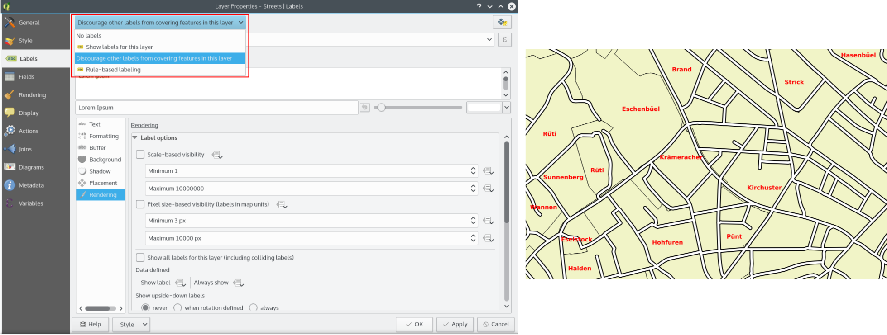
Feature: Rule-based labeling¶
Labels on features can now be styled using rules to add even more control over placement and styling of labels. Just like the rule based cartographic rendering, label rules can be nested to allow for extremely flexible styling options. For example you can render labels differently based on the size of the feature they will be rendered into (as illustrated in the screenshot).
See blogpost for more details
This feature was developed by: Martin Dobias at Lutra Consulting on subcontract to Gis3W
This feature was funded by: Tuscany Region (Italy) - SITA (CIG: 63526840AE)
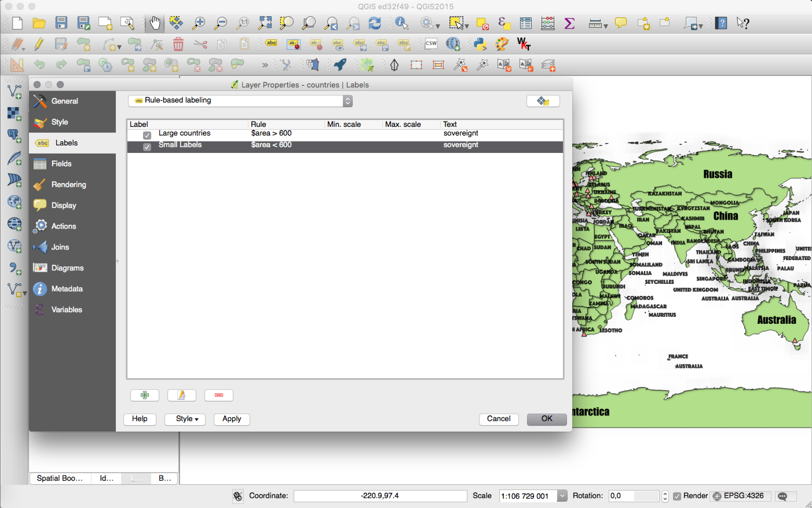
Map Composer¶
Feature: Atlas navigation improvements¶
You can now set a field or expression as the “page name” for atlas compositions. A page number combobox has been added to the atlas toolbar, which shows both a list of available page numbers and names. This allows you to jump directly to a specific page within your atlas.
The page name can also be used within symbology and labeling expressions to allow advanced styling of atlas features based on their page name.
This feature was developed by: Nyall Dawson

Feature: Custom format for grid annotations¶
Composer map grid annotations can now be formatted in custom formats, which are evaluated using the expression engine. Now you utilise whatever esoteric grid numbering format your maps require!
This feature was developed by: Nyall Dawson

Feature: Multiline text handling and automatic text wrapping in composer attribute tables¶
Composer attribute tables now include full support for multi line strings. Control over the vertical alignment of text within a cell has also been added, along with options for wrapping text on certain characters or automatically calculating text wrapping to fit the size of columns. To enforce automatic text wrapping with automatic row heights, set the column width to a fixed size.
This feature was developed by: Nyall Dawson
This feature was funded by: City of Uster
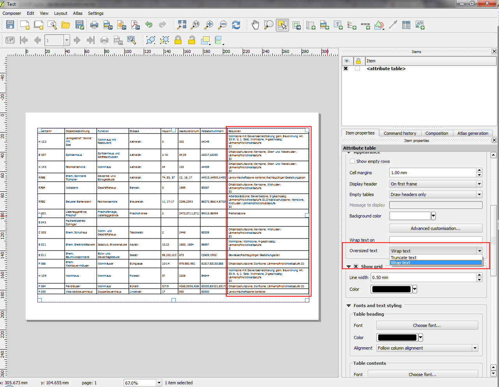
Feature: Advanced customisation of cell background color¶
This change allows users to set differing colors for alternating rows and columns, first/last row/column and header row within composer attribute tables.
This feature was developed by: Nyall Dawson
This feature was funded by: Ville de Morges

Feature: Add fit page to contents option and options for cropping exports to contents¶
A new option has been added in the composition panel to resize a composition to its contents, with optional extra margins if required.
Composer exports can also be cropped to their contents. If selected, this option will make the images output by composer include only the area of the composition with content. There’s also an option for margins to add around the item bounds if required.
If the composition includes a single page, then the output will be sized to include EVERYTHING on the composition. If it’s a multi-page composition, then each page will be cropped to only include the area of that page with items.
A new image export options dialog has been added to facilitate this, which also includes handy shortcuts for overriding the print resolution or exported image dimensions.
Sponsored by: NIWA
This feature was developed by: Nyall Dawson

Feature: Force vector layers to render as a raster images¶
A new option has been added under the layer properties, rendering tab to force a vector layer to render as a raster. Extremely detailed layers (eg polygon layers with a huge number of nodes) can cause composer exports in PDF/SVG format to be huge as all nodes are included in the exported file. This can also make the resultant file very slow to work with or open in external programs. Now, you can force these layers to be rasterised on a layer-by-layer basis, so that the exported files won’t have to include all the nodes contained in these layers. The end result is smaller file sizes and PDFs/SVGs which are faster to open.
This feature was developed by: Nyall Dawson

Feature: Data defined control over map layers and style presets¶
A new data defined control has been added for the map layers and style presets to show in a composer map. The map layers data defined expression should result in a | (pipe) delimited list of layer names which will be shown in the map, or the style preset data defined expression should result in the name of an existing style preset.
Using this control over map layers allows for “layer-based” atlases, where the map layers should change between atlas pages instead of or in combination with the map extent changing. An example could be an atlas looping over different administrative units and at the same time looping over several historic maps or aerial images.
This feature was developed by: Nyall Dawson
This feature was funded by: City of Uster
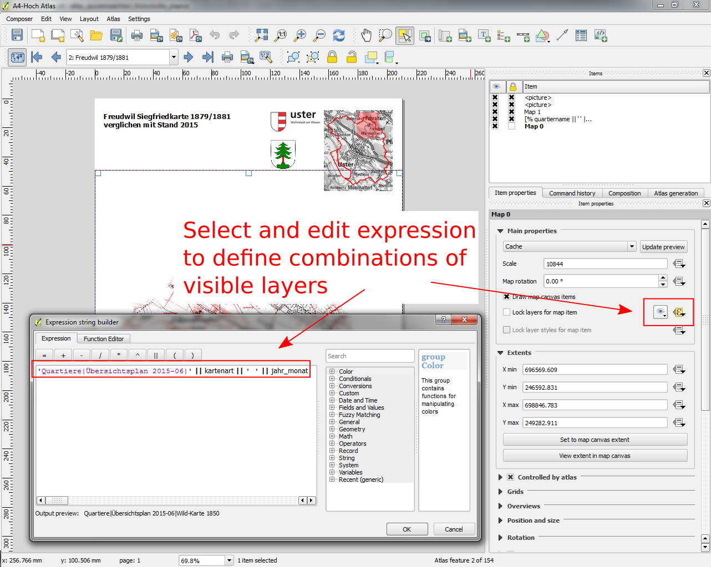
Feature: Option to hide pages from view/export¶
There’s now an option to hide the display of pages while editing and exporting compositions. This option is useful for compositions which aren’t intended for print and are not bound by any preset page sizes. You can hide the pages, then add and resize items in any way you desire without the visual distraction of page boundaries!
Sponsored by: NIWA
This feature was developed by: Nyall Dawson
Plugins¶
Feature: Update of the GRASS plugin¶
The GRASS plugin was updated to enable support for GRASS 7. GRASS layers can be browsed and loaded from the QGIS browser or browser panel. GRASS vector data can be edited directly within QGIS. The project contains the following work packages:
Plugin library upgrade and multi version build
QGIS browser and browser panel integration
Support for mapsets, modules and shell to allow data analysis
vector editing
For both GRASS 6 and GRASS 7 users you will find that the integration between GRASS and QGIS is much more seamless. You can create GRASS layers directly in the QGIS Browser panel, style GRASS vector layers using standard QGIS styling tools and use familiar QGIS digitising tools to create new vector geometries in a GRASS mapset.
See also QGIS GRASS Plugin Upgrade project page and progress report
This feature was developed by: Radim Blazek
This feature was funded by: Crowd funding, see project page
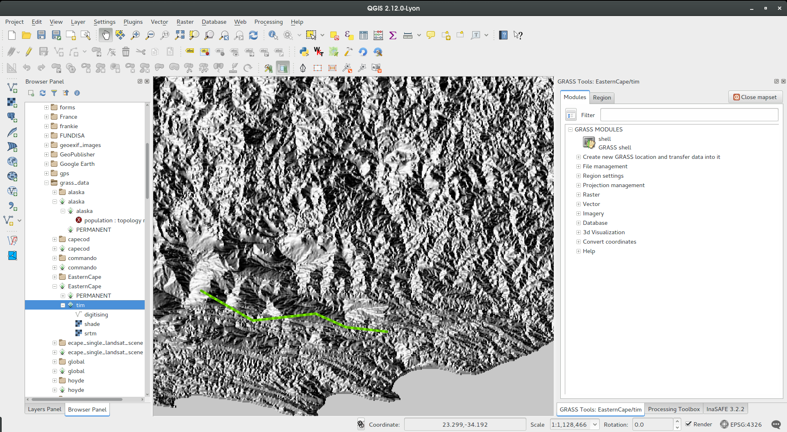
Programmability¶
Feature: Map tools moved from app->gui¶
This change allows reuse of map tools from within PyQGIS scripts and Python plugins.
This feature was developed by: Matthias Kuhn at OpenGIS
This feature was funded by: SIGE
Feature: Editing layers via `with edit(layer):`¶
Example:
from qgis.core import edit
with edit(layer):
f=layer.getFeatures().next()
f[0]=5
layer.updateFeature(f)
This will automatically call commitChanges() in the end. If any exception occurs, it will rollBack() all the changes.
This feature was developed by: Matthias Kuhn at OpenGIS
Feature: New API for labeling engine (QgsLabelingEngineV2)¶
The idea is to make the engine more flexible compared to QgsPalLabeling implementation:
abstract dealing with text labels / diagrams from the engine itself
allow multiple types of labels per layer
support custom label providers (e.g. implemented by plugins)
make the labeling engine independent from map rendering engine
make it easier to auto-test the labeling engine and its components
See blogpost for more details
This feature was developed by: Martin Dobias at Lutra Consulting on subcontract to Gis3W
This feature was funded by: Tuscany Region (Italy) - SITA (CIG: 63526840AE)
Feature: Open scripts in external editor¶
Pythonistas rejoice - you can now open your scripts in an external editor using the new button added to the console.
This feature was developed by: Nathan Woodrow

Feature: New classes for PyQGIS programs¶
A new class QgsStringUtils has been added which allows PyQGIS scripts to utilise the new fuzzy matching algorithms added in 2.12. These include functions for finding the Levenshtein edit distance between two strings and for calculating the soundex phonetic representation of a string. These algorithms have been highly optimized for performance, so they are ready for you to start fuzzy matching across millions of strings!
This feature was developed by: Nyall Dawson
QGIS Server¶
Feature: QGIS Server Python API¶
QGIS Server is now packed as a library with an initial (but growing) API and Python bindings. With the new API we have a set of Python tests for the server main component and for the server plugins. Invoking the server from Python is now as easy as:
from qgis.server import QgsServer
headers, body = QgsServer().handleRequest(my_query_string)
For more information see this article
This work has been developed and funded by: Alessandro Pasotti at ItOpen
Feature: getMap in dxf format¶
It is now possible to retrieve the result of a GetMap WMS request in DXF format. It supports the same features and options as available in QGIS desktop. With the same limitations.
http://yourserver.org/cgi-bin/qgismapserver.fcgi?map=/path/to/your/projectfile.qgs&SERVICE=WMS&VERSION=1.3.0&REQUEST=GetMAP&FORMAT=application/dxf&FORMAT_OPTIONS=SCALE:500;MODE:SYMBOLLAYERSYMBOLOGY&FILE_NAME=youroutputfilename.dxf&CRS=EPSG:EPSG:21781&BBOX=695558.73070825,244430.77224034,697158.88528251,245722.25976142&WIDTH=1042&HEIGHT=841&LAYERS=yourdxfexportlayersSee also QGIS as OGC data server for all the available options.
In the screenshot you see QGIS Web Client on the left with the DXF export functionality (utilizing QGIS server) and the same extent viewed in Autodesk TrueView on the right.
This feature was developed by: Marco Hugentobler Sourcepole AG
This feature was funded by: City of Uster

Symbology¶
Feature: Export thumbnails from style manager¶
Style manager now allows you to export selected style thumbnails as either SVG or PNG images.
This feature was developed by: Nathan Woodrow
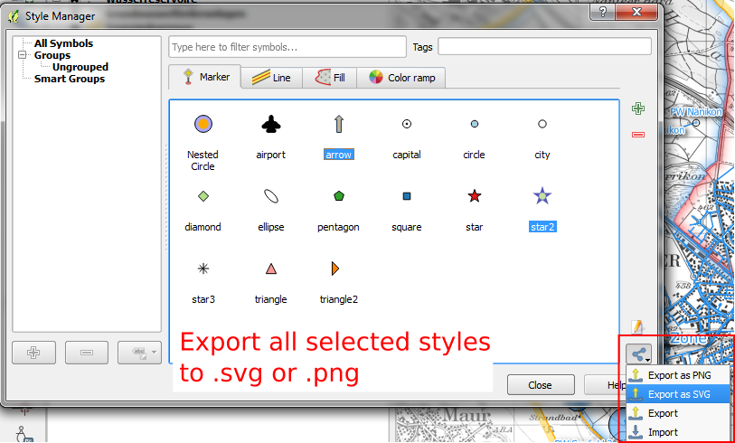
Feature: New option for limiting size in mm when using map unit sizes¶
Previously only the option to limit the scale range of the map unit sizes was available. Now you can also choose to limit the corresponding rendered size in mm.

Feature: Improvements to displacement renderer¶
Allow tolerance in mm/pixels for displacement renderer
Allow setting transparency for colors
Concentric ring placement mode (allows for more compact display than only with rings)
This feature was developed by: Nyall Dawson

Feature: All color ramps can now be edited¶
In QGIS 2.12 “edit” buttons have been added next to every color ramp choice. This allows you to easily edit an existing color ramp without having to create a new ramp and overwrite the existing one.

Feature: Improved handling of SVG marker outlines¶
QGIS 2.12 fixes a number of issues regarding the handling of outlines within SVG marker and SVG fill symbols.
Previous versions of QGIS would render the outlines at a significantly smaller size than set, and drawing SVGs with outline sizes in map units was broken.
These issues have been fixed in QGIS 2.12, but as a result you may need to update your project symbology if you’ve previously set oversized outlines for your symbols to overcome these bugs. In the image you see QGIS 2.12 vs QGIS 2.10 SVG markers in the symbol layer dialogs.
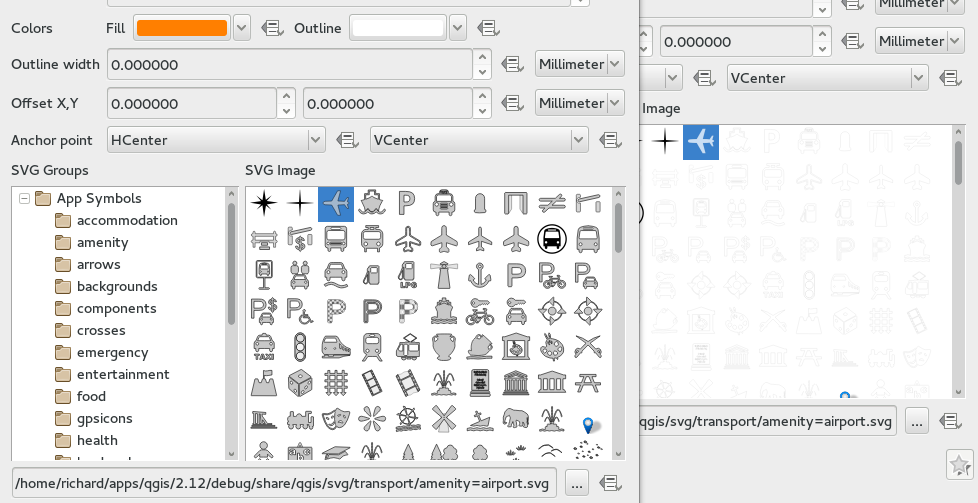
Feature: Add pixels as option for all symbology size unit choices¶
For all size input widgets there is now a third option “pixel”, next to “mm” and “map units”. This concerns symbol sizes, stroke widths, dash sizes, offsets, etc. This may help, if you design for screens and not for print output.
This feature was developed by: Nyall Dawson
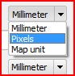